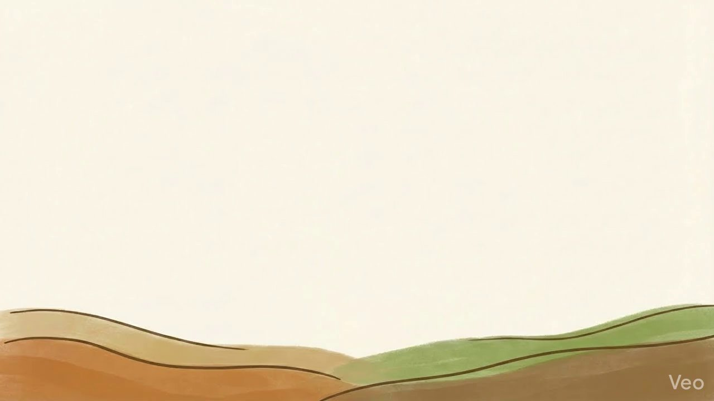
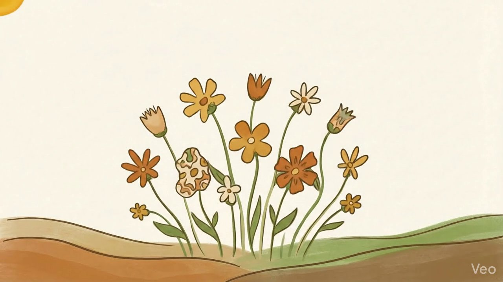
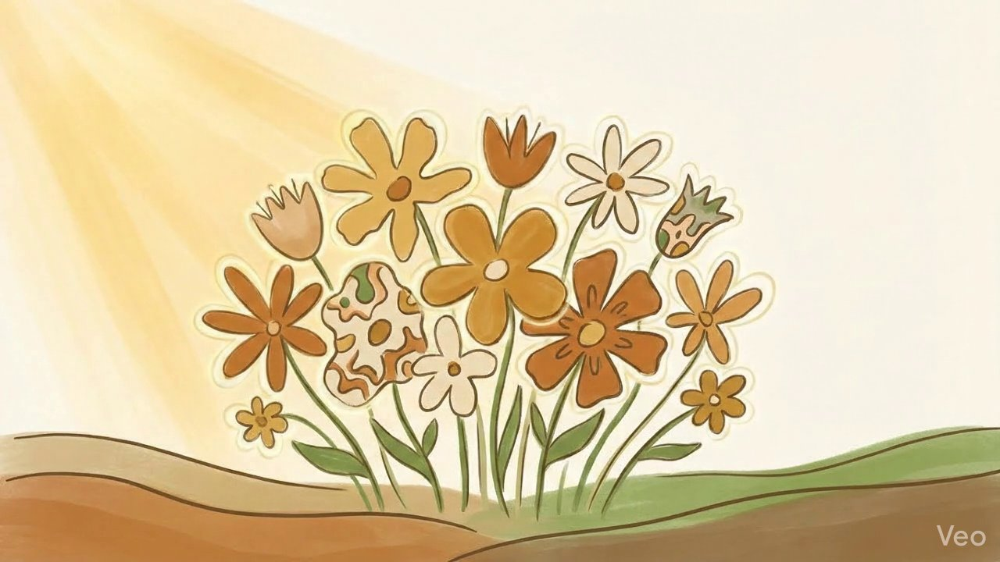

她的履歷沒問題，問題是她的臉
面試完的椅子還沒坐熱，結果就決定了
不是因為能力不夠，而是因為臉上有一道疤
根據就業服務法第 5 條，雇主不得以容貌歧視求職者
點擊閱讀完整故事 →
本頁為淡江大學學生整理製作
引用陽光基金會公開資料
臉部平權是不以外貌評斷一個人的價值，讓每張臉都能在生活、就學、就業中被「公平對待」
也許你不一定認識顏面傷者
但生活在「以貌取人」的社會裡
你是第一次接觸這個主題嗎？不到十分鐘，就能從「這是什麼」一路到「我可以做什麼」
外貌不是衡量一個人的標準——每張臉，都值得被平等對待
臉部平權的核心很直接：外貌不應該成為評價一個人能力或價值的依據。不論燒傷、疤痕或疾病痕跡，他也依然和你一樣，應該被尊重、被公平對待
每張臉都不一樣，但每個人都值得被尊重
本站依陽光基金會公開資料整理
初衷不一定是惡意，但你的反應，可能每天都在傷害一個人
外貌歧視不會只發生在明顯的惡意裡，更常見於「看起來沒什麼」的那些——「多看幾眼、刻意繞道、把外貌當笑點」，他們不一定出於壞心，卻能讓人感覺到距離
你的每一個選擇，都能形塑社會的氣氛
在台灣「每 5 人就有 1 人」曾因外貌受到不公平的對待——被嘲笑、被評論，或在求職中受到歧視
這不是少數人的特殊遭遇，他在生活中實際存在
它發生在面試室、教室、捷運車廂，就在你我每天都會經過的地方
資料來源：陽光基金會於 2025 年「臺灣民眾對外貌的意向與經驗調查」
「只是開個玩笑」——
對當事人，那可能是「今天的第十次」
當這些目光、這些問句、這些沉默，每天都在發生——不是一次崩潰，是一點一點磨，懷疑自己哪裡不對，開始把自己縮小，只是為了避開那些讓人不舒服的目光
傷害的程度，不由施加者決定，而由承受者感受
外貌差異常常讓人承受無聲的壓力，「在他人先入為主的判斷裡，一次又一次被限制」
只要把對方「當一個普通人——這樣就夠了」
不需要做甚麼，只要記住這幾件事，就已經對我們很有幫助了
你不需要成為倡議者——「少說一句，少笑一次，就已經在改變什麼了」
這個議題比你想的更立體——這裡有幾個地方，可以帶你繼續走進去
閱讀前
每台裝置限投一次
謝謝你願意加入來認識這個議題
想一想
沒有標準答案，選一個最接近你的反應
「某些傷害，不是因為惡意」——而是「因為大家都習慣是這樣了」，習慣多看一眼，習慣不說什麼，習慣讓這種事繼續發生
從面試、校園到日常對話，這些故事也許「離你沒有那麼遠」

面試完的椅子還沒坐熱，結果就決定了
不是因為能力不夠，而是因為臉上有一道疤
根據就業服務法第 5 條，雇主不得以容貌歧視求職者
點擊閱讀完整故事 →

教室是每天都得踏進去的地方，但對她來說，那扇門比任何人都重
傷是早就結痂了，可是那些眼神，沒有
教育部統計：校園霸凌通報件數五年內增加近五倍，外貌相關霸凌是顏面傷者的常見遭遇
點擊閱讀完整故事 →

沒有人說什麼，也沒有人做什麼
只是沒有人坐過去
這種沉默，有時候比嘲笑更難承受
點擊閱讀完整故事 →
很多傷害不是出於惡意，而是沒有意識到，知道了，就能不一樣
「不要看一張臉，要看一個人」
我想從今天開始不需要參加倡議，只需要從你自己開始，從你的每一次轉發開始
在捷運、在辦公室、在任何地方——當你注意到對方的外貌，試著把注意力移到他說了什麼、做了什麼，這個練習，今天就能開始
不用附上說明，傳過去就好，你覺得他應該看，這個直覺本身就已經很重要
不是要你道歉，不是要你解釋，只是下一次，那句話快說出口的時候，停一下，這一秒的停頓，可能會讓一個人的一天從此改變
改變「不需要做很大的行動，它可以是一個沒說出口的玩笑，一個沒有多停留的視線，一條傳出去的連結」